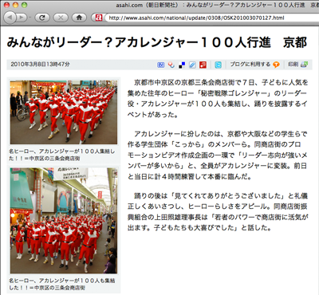

アカレンジャー 100 人集合 (京都) 27
ストーリー by reo
色じゃなく僕らの個性を見て欲しい 部門より
色じゃなく僕らの個性を見て欲しい 部門より
papa-pahoo 曰く、
asahi.com の記事によると、「秘密戦隊ゴレンジャー」のリーダー役・アカレンジャーが 3 月 7 日、京都三条会商店街 (京都市中京区) に 100 人集まり、踊りを披露したという。
中の人たちは学生団体「こっから」で、同商店街のプロモーションビデオ作成企画の一環という。「リーダー志向が強いメンバーが多いから」全員がアカレンジャーに変装したというが、黄レンジャーのような体格の人はいなかったのだろうか。

愛國戰隊 (スコア:4, おもしろおかしい)
びっくり！！きみの京都も真っ赤っか！
#アイ・カミカゼ100人はやばすぎる